R for Data Science
Exercise answer key
This is a work-in-progress answer key for the exercises in Hadley Wickham’s R for Data Science. For many questions, there is more than one correct answer. This is simply what I came up with, attempting to limit myself to only using operations and functions the reader has seen in previous chapters.
See an error or want to add an answer? Submit a pull request.
Load prerequisites
library(tidyverse)
#> Loading tidyverse: ggplot2
#> Loading tidyverse: tibble
#> Loading tidyverse: tidyr
#> Loading tidyverse: readr
#> Loading tidyverse: purrr
#> Loading tidyverse: dplyr
#> Conflicts with tidy packages ----------------------------------------------
#> filter(): dplyr, stats
#> lag(): dplyr, stats3 Data visualization
3.2.4 Exercises
Run
ggplot(data = mpg)what do you see?ggplot(data = mpg)
How many rows are in
mtcars? How many columns?# one approach nrow(mtcars) #> [1] 32 ncol(mtcars) #> [1] 11 # another approach dim(mtcars) #> [1] 32 11What does the
drvvariable describe? Read the help for?mpgto find out.drvindicates whether the vehicle is front-wheel drive, rear wheel drive, or 4 wheel drive.Make a scatterplot of
hwyvscyl.ggplot(data = mpg) + geom_point(mapping = aes(x = hwy, y = cyl))
What happens if you make a scatterplot of
classvsdrv. Why is the plot not useful?ggplot(data = mpg) + geom_point(mapping = aes(x = class, y = drv))
The variables are both categorical, so the points on the plot overlap with one another.
3.3.1 Exercises
What’s gone wrong with this code? Why are the points not blue?
ggplot(data = mpg) + geom_point(mapping = aes(x = displ, y = hwy, color = "blue"))
Because the
colorargument was set withinaes(), notgeom_point().ggplot(data = mpg) + geom_point(mapping = aes(x = displ, y = hwy), color = "blue")
Which variables in
mpgare categorical? Which variables are continuous? (Hint: type?mpgto read the documentation for the dataset). How can you see this information when you runmpg?- Categorical -
manufacturer,model,trans,drv,fl,class - Continuous -
displ,cyl,cty,hwy - Categorical variables are type
chr, whereas continuous variables are typedblorint
mpg #> # A tibble: 234 × 11 #> manufacturer model displ year cyl trans drv cty hwy #> <chr> <chr> <dbl> <int> <int> <chr> <chr> <int> <int> #> 1 audi a4 1.8 1999 4 auto(l5) f 18 29 #> 2 audi a4 1.8 1999 4 manual(m5) f 21 29 #> 3 audi a4 2.0 2008 4 manual(m6) f 20 31 #> 4 audi a4 2.0 2008 4 auto(av) f 21 30 #> 5 audi a4 2.8 1999 6 auto(l5) f 16 26 #> 6 audi a4 2.8 1999 6 manual(m5) f 18 26 #> 7 audi a4 3.1 2008 6 auto(av) f 18 27 #> 8 audi a4 quattro 1.8 1999 4 manual(m5) 4 18 26 #> 9 audi a4 quattro 1.8 1999 4 auto(l5) 4 16 25 #> 10 audi a4 quattro 2.0 2008 4 manual(m6) 4 20 28 #> # ... with 224 more rows, and 2 more variables: fl <chr>, class <chr>- Categorical -
Map a continuous variable to
color,size, andshape. How do these aesthetics behave differently for categorical vs. continuous variables?# color ggplot(data = mpg) + geom_point(mapping = aes(x = displ, y = hwy, color = cty))
# size ggplot(data = mpg) + geom_point(mapping = aes(x = displ, y = hwy, size = cty))
# shape ggplot(data = mpg) + geom_point(mapping = aes(x = displ, y = hwy, shape = cty)) #> Error: A continuous variable can not be mapped to shape
For these aesthetics, continuous variables are visualized on a spectrum (see the color plot with the continuous color palette), whereas categorical variables are binned into discrete categories, like this:
ggplot(data = mpg) + geom_point(mapping = aes(x = displ, y = hwy, color = class))
What happens if you map the same variable to multiple aesthetics?
ggplot(data = mpg) + geom_point(mapping = aes(x = displ, y = hwy, color = cty, size = cty))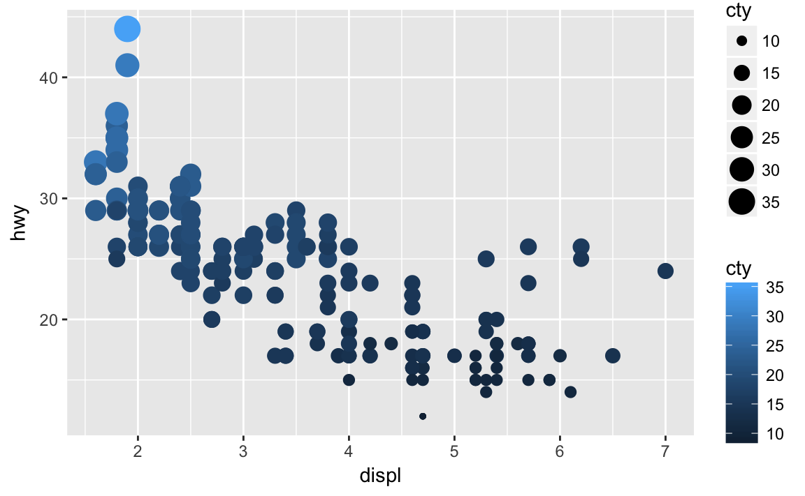
Both aesthetics are implemented, and multiple legends are generated.
What does the
strokeaesthetic do? What shapes does it work with? (Hint: use?geom_point)ggplot(data = mpg) + geom_point(mapping = aes(x = displ, y = hwy), stroke = 3, shape = 21)
strokeadjusts the thickness of the border for shapes that can take on different colors both inside and outside. It only works for shapes 21-24.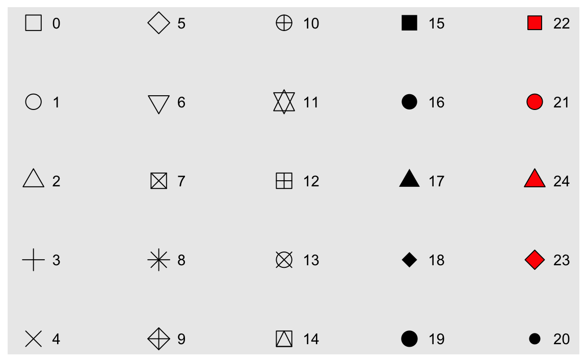
What happens if you map an aesthetic to something other than a variable name, like
aes(colour = displ < 5)?ggplot(data = mpg) + geom_point(mapping = aes(x = displ, y = hwy, color = displ < 5))
R executes the code and creates a temporary variable containing the results of the operation. Here, the new variable takes on a value of
TRUEif the engine displacement is less than 5 orFALSEif the engine displacement is more than or equal to 5.
3.5.1 Exercises
What happens if you facet on a continuous variable?
ggplot(data = mpg) + geom_point(mapping = aes(x = drv, y = cyl)) + facet_wrap(~ displ)
Your graph will not make much sense. R will try to draw a separate facet for each unique value of the continuous variable. If you have too many unique values, you may crash R.
What do the empty cells in plot with
facet_grid(drv ~ cyl)mean? How do they relate to this plot?ggplot(data = mpg) + geom_point(mapping = aes(x = drv, y = cyl))
ggplot(data = mpg) + geom_point(mapping = aes(x = drv, y = cyl)) + facet_grid(drv ~ cyl)
Empty cells mean there are no observations in the data that have that unique combination of values. For instance, in this plot we can determine that there are no vehicles with 5 cylinders that are also 4 wheel drive vehicles. The plot is similar to the original one, just that each facet only appears to have a single data point.
What plots does the following code make? What does
.do?ggplot(data = mpg) + geom_point(mapping = aes(x = displ, y = hwy)) + facet_grid(drv ~ .)
ggplot(data = mpg) + geom_point(mapping = aes(x = displ, y = hwy)) + facet_grid(. ~ cyl)
.acts a placeholder for no variable. Infacet_grid(), this results in a plot faceted on a single dimension (1 by \(N\) or \(N\) by 1) rather than an \(N\) by \(N\) grid.Take the first faceted plot in this section:
ggplot(data = mpg) + geom_point(mapping = aes(x = displ, y = hwy)) + facet_wrap(~ class, nrow = 2)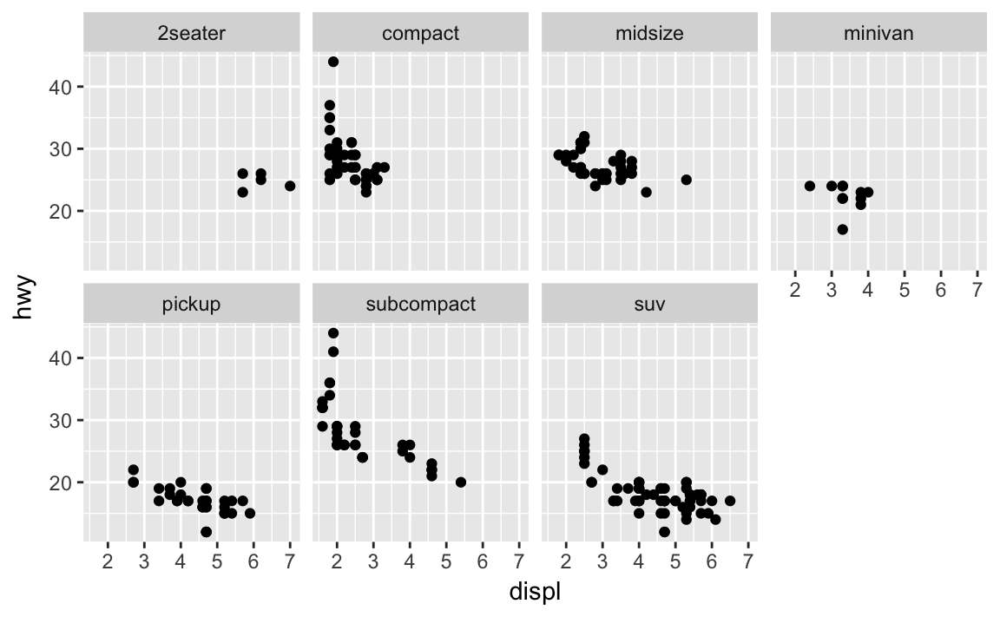
What are the advantages to using faceting instead of the colour aesthetic? What are the disadvantages? How might the balance change if you had a larger dataset?
ggplot(data = mpg) + geom_point(mapping = aes(x = displ, y = hwy, color = class))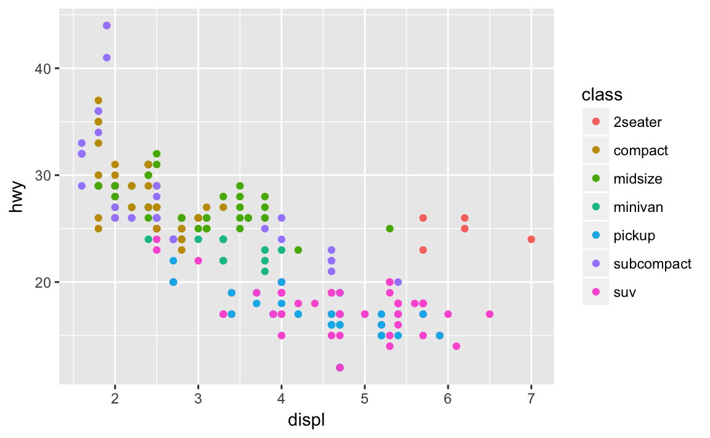
Faceting splits the data into separate grids and better visualizes trends within each individual facet. The disadvantage is that by doing so, it is harder to visualize the overall relationship across facets. The color aesthetic is fine when your dataset is small, but with larger datasets points may begin to overlap with one another. In this situation with a colored plot, jittering may not be sufficient because of the additional color aesthetic.
Read
?facet_wrap. What doesnrowdo? What doesncoldo? What other options control the layout of the individual panels? Why doesn’tfacet_grid()havenrowandncolvariables?nrowsets how many rows the faceted plot will have.ncolsets how many columns the faceted plot will have.as.tabledetermines the starting facet to begin filling the plot, anddirdetermines the starting direction for filling in the plot (horizontal or vertical).
When using
facet_grid()you should usually put the variable with more unique levels in the columns. Why?This will extend the plot vertically, where you typically have more viewing space. If you extend it horizontally, the plot will be compressed and harder to view.
ggplot(data = mpg) + geom_point(mapping = aes(x = displ, y = hwy)) + facet_grid(trans ~ drv)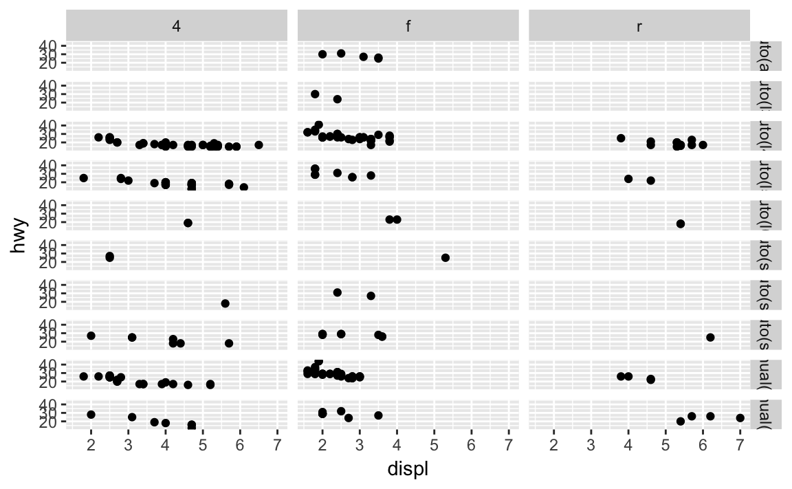
ggplot(data = mpg) + geom_point(mapping = aes(x = displ, y = hwy)) + facet_grid(drv ~ trans)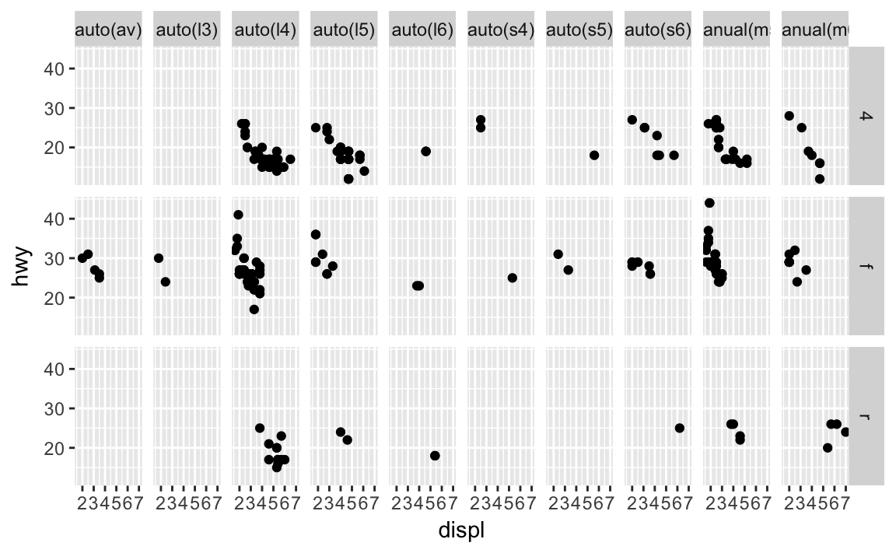
3.6.1 Exercises
What geom would you use to draw a line chart? A boxplot? A histogram? An area chart?
- Line chart -
geom_line() - Boxplot -
geom_boxplot() - Histogram -
geom_histogram() - Area chart -
geom_area()
- Line chart -
Run this code in your head and predict what the output will look like. Then, run the code in R and check your predictions.
ggplot(data = mpg, mapping = aes(x = displ, y = hwy, color = drv)) + geom_point() + geom_smooth(se = FALSE) #> `geom_smooth()` using method = 'loess'
What does
show.legend = FALSEdo? What happens if you remove it?
Why do you think I used it earlier in the chapter?It removes the legend. The aesthetics are still mapped and plotted, but the key is removed from the graph. I don’t know why used it earlier because he actually did not.
What does the
seargument togeom_smooth()do?It determines whether or not to draw a confidence interval around the smoothing line.
Will these two graphs look different? Why/why not?
ggplot(data = mpg, mapping = aes(x = displ, y = hwy)) + geom_point() + geom_smooth() #> `geom_smooth()` using method = 'loess'
ggplot() + geom_point(data = mpg, mapping = aes(x = displ, y = hwy)) + geom_smooth(data = mpg, mapping = aes(x = displ, y = hwy)) #> `geom_smooth()` using method = 'loess'
No because they use the same data and mapping settings. The only difference is that by storing it in the
ggplot()function, it is automatically reused for each layer.Recreate the R code necessary to generate the following graphs.
ggplot(data = mpg, mapping = aes(x = displ, y = hwy)) + geom_point() + geom_smooth(se = FALSE)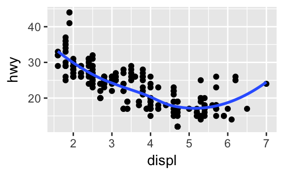
ggplot(data = mpg, mapping = aes(x = displ, y = hwy)) + geom_smooth(aes(group = drv), se = FALSE) + geom_point()
ggplot(data = mpg, mapping = aes(x = displ, y = hwy, color = drv)) + geom_point() + geom_smooth(se = FALSE)
ggplot(data = mpg, mapping = aes(x = displ, y = hwy)) + geom_point(aes(color = drv)) + geom_smooth(se = FALSE)
ggplot(data = mpg, mapping = aes(x = displ, y = hwy)) + geom_point(aes(color = drv)) + geom_smooth(aes(linetype = drv), se = FALSE)
ggplot(data = mpg, mapping = aes(x = displ, y = hwy)) + geom_point(size = 4, colour = "white") + geom_point(aes(colour = drv))
3.8.1 Exercises
What is the default geom associated with
stat_summary()? How could you rewrite the previous plot to use that geom function instead of the stat function?The default geom is
geom_pointrange(). Rewritten, we could use:ggplot(data = diamonds) + geom_pointrange(mapping = aes(x = cut, y = depth), stat = "summary", fun.ymin = min, fun.ymax = max, fun.y = median)
What does
geom_col()do? How is it different togeom_bar()?geom_bar()uses thestat_count()statistical transformation to draw the bar graph.geom_col()assumes the values have already been transformed to the appropriate values.geom_bar(stat = "identity")andgeom_col()are equivalent.Most geoms and stats come in pairs that are almost always used in concert. Read through the documentation and make a list of all the pairs. What do they have in common?
What variables does
stat_smooth()compute? What parameters control its behaviour?stat_smooth()calculates four variables:y- predicted valueymin- lower pointwise confidence interval around the meanymax- upper pointwise confidence interval around the meanse- standard error
See
?stat_smoothfor more details on the specific parameters. Most importantly,methodcontrols the smoothing method to be employed,sedetermines whether confidence interval should be plotted, andleveldetermines the level of confidence interval to use.In our proportion bar chart, we need to set
group = 1. Why? In other words what is the problem with these two graphs?ggplot(data = diamonds) + geom_bar(mapping = aes(x = cut, y = ..prop..))
ggplot(data = diamonds) + geom_bar(mapping = aes(x = cut, fill = color, y = ..prop..))
If we fail to set
group = 1, the proportions for each cut are calculated using the complete dataset, rather than each subset ofcut. Instead, we want the graphs to look like this:ggplot(data = diamonds) + geom_bar(mapping = aes(x = cut, y = ..prop.., group = 1))
ggplot(data = diamonds) + geom_bar(mapping = aes(x = cut, fill = color, y = ..prop.., group = 1))
3.8.1 Exercises
What is the problem with this plot? How could you improve it?
ggplot(data = mpg, mapping = aes(x = cty, y = hwy)) + geom_point()
Many of the data points overlap. We can jitter the points by adding some slight random noise, which will improve the overall visualization.
ggplot(data = mpg, mapping = aes(x = cty, y = hwy)) + geom_jitter()
What parameters to
geom_jitter()control the amount of jittering?widthandheight.Compare and contrast
geom_jitter()withgeom_count().ggplot(data = mpg, mapping = aes(x = cty, y = hwy)) + geom_jitter()
ggplot(data = mpg, mapping = aes(x = cty, y = hwy)) + geom_count()
Rather than adding random noise,
geom_count()counts the number of observations at each location, then maps the count to point area. It makes larger points the more observations are located at that area, so the number of visible points is equal togeom_point().What’s the default position adjustment for
geom_boxplot()? Create a visualisation of thempgdataset that demonstrates it.The default position adjustment is
position_dodge().ggplot(data = mpg, mapping = aes(x = class, y = hwy, color = drv)) + geom_boxplot(position = "dodge")
3.9.1 Exercises
Turn a stacked bar chart into a pie chart using
coord_polar().ggplot(data = mpg, mapping = aes(x = factor(1), fill = class)) + geom_bar(width = 1) + coord_polar(theta = "y")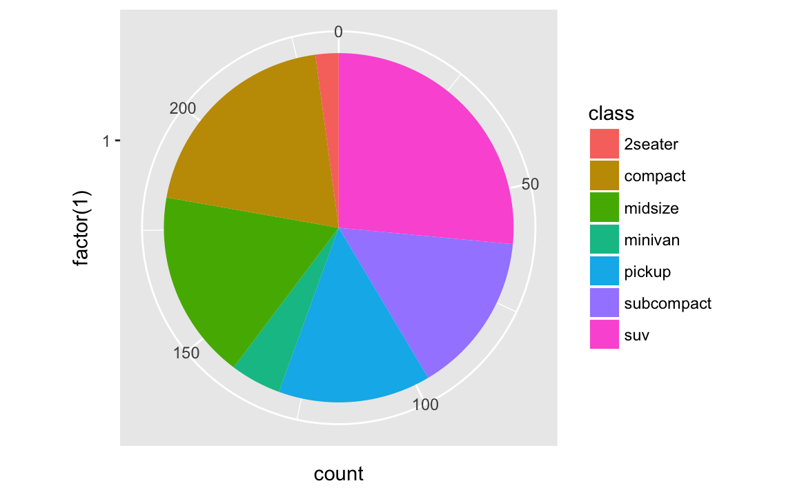
What does
labs()do? Read the documentation.labs()adds labels to the graph. You can add a title, subtitle, and a label for the \(x\) and \(y\) axes, as well as a caption.What’s the difference between
coord_quickmap()andcoord_map()?coord_map()projects a portion of the earth (a three-dimensional object) onto a flat (two-dimensional) plane.coord_map()does not preserve straight lines and therefore is computationally intensive;coord_quickmap()preserves straight lines and is therefore faster to draw (though less accurate).What does the plot below tell you about the relationship between city and highway mpg? Why is
coord_fixed()important? What doesgeom_abline()do?ggplot(data = mpg, mapping = aes(x = cty, y = hwy)) + geom_point() + geom_abline() + coord_fixed()
The relationships is approximately linear, though overall cars have slightly better highway mileage than city mileage. But using
coord_fixed(), the plot draws equal intervals on the \(x\) and \(y\) axes so they are directly comparable.geom_abline()draws a line that, by default, has an intercept of 0 and slope of 1. This aids us in our discovery that automobile gas efficiency is on average slightly higher for highways than city driving, though the slope of the relationship is still roughly 1-to-1.
4 Workflow: basics
4.4 Practice
Why does this code not work?
my_variable <- 10 my_varıable #> Error in eval(expr, envir, enclos): object 'my_varıable' not foundThe second line has a typo. It should be
my_variable, notmy_varıable.Tweak each of the following R commands so that they run correctly:
library(tidyverse) # incorrect ggplot(dota = mpg) + geom_point(mapping = aes(x = displ, y = hwy)) #> Error in structure(list(data = data, layers = list(), scales = scales_list(), : argument "data" is missing, with no default # correct ggplot(data = mpg) + geom_point(mapping = aes(x = displ, y = hwy))
# incorrect fliter(mpg, cyl = 8) #> Error in eval(expr, envir, enclos): could not find function "fliter" filter(diamond, carat > 3) #> Error in filter_(.data, .dots = lazyeval::lazy_dots(...)): object 'diamond' not found # correct filter(mpg, cyl == 8) #> # A tibble: 70 × 11 #> manufacturer model displ year cyl trans drv #> <chr> <chr> <dbl> <int> <int> <chr> <chr> #> 1 audi a6 quattro 4.2 2008 8 auto(s6) 4 #> 2 chevrolet c1500 suburban 2wd 5.3 2008 8 auto(l4) r #> 3 chevrolet c1500 suburban 2wd 5.3 2008 8 auto(l4) r #> 4 chevrolet c1500 suburban 2wd 5.3 2008 8 auto(l4) r #> 5 chevrolet c1500 suburban 2wd 5.7 1999 8 auto(l4) r #> 6 chevrolet c1500 suburban 2wd 6.0 2008 8 auto(l4) r #> 7 chevrolet corvette 5.7 1999 8 manual(m6) r #> 8 chevrolet corvette 5.7 1999 8 auto(l4) r #> 9 chevrolet corvette 6.2 2008 8 manual(m6) r #> 10 chevrolet corvette 6.2 2008 8 auto(s6) r #> # ... with 60 more rows, and 4 more variables: cty <int>, hwy <int>, #> # fl <chr>, class <chr> filter(diamonds, carat > 3) #> # A tibble: 32 × 10 #> carat cut color clarity depth table price x y z #> <dbl> <ord> <ord> <ord> <dbl> <dbl> <int> <dbl> <dbl> <dbl> #> 1 3.01 Premium I I1 62.7 58 8040 9.10 8.97 5.67 #> 2 3.11 Fair J I1 65.9 57 9823 9.15 9.02 5.98 #> 3 3.01 Premium F I1 62.2 56 9925 9.24 9.13 5.73 #> 4 3.05 Premium E I1 60.9 58 10453 9.26 9.25 5.66 #> 5 3.02 Fair I I1 65.2 56 10577 9.11 9.02 5.91 #> 6 3.01 Fair H I1 56.1 62 10761 9.54 9.38 5.31 #> 7 3.65 Fair H I1 67.1 53 11668 9.53 9.48 6.38 #> 8 3.24 Premium H I1 62.1 58 12300 9.44 9.40 5.85 #> 9 3.22 Ideal I I1 62.6 55 12545 9.49 9.42 5.92 #> 10 3.50 Ideal H I1 62.8 57 12587 9.65 9.59 6.03 #> # ... with 22 more rowsPress Alt + Shift + K. What happens? How can you get to the same place using the menus?
The keyboard shortcuts help display appears. To access it from the menus, go to Help > Keyboard Shortcuts Help
5 Data transformation
5.7.1 Exercises
Find all flights that
Had an arrival delay of two or more hours
library(nycflights13) filter(flights, arr_delay >= 120) #> # A tibble: 10,200 × 19 #> year month day dep_time sched_dep_time dep_delay arr_time #> <int> <int> <int> <int> <int> <dbl> <int> #> 1 2013 1 1 811 630 101 1047 #> 2 2013 1 1 848 1835 853 1001 #> 3 2013 1 1 957 733 144 1056 #> 4 2013 1 1 1114 900 134 1447 #> 5 2013 1 1 1505 1310 115 1638 #> 6 2013 1 1 1525 1340 105 1831 #> 7 2013 1 1 1549 1445 64 1912 #> 8 2013 1 1 1558 1359 119 1718 #> 9 2013 1 1 1732 1630 62 2028 #> 10 2013 1 1 1803 1620 103 2008 #> # ... with 10,190 more rows, and 12 more variables: sched_arr_time <int>, #> # arr_delay <dbl>, carrier <chr>, flight <int>, tailnum <chr>, #> # origin <chr>, dest <chr>, air_time <dbl>, distance <dbl>, hour <dbl>, #> # minute <dbl>, time_hour <dttm>Flew to Houston (
IAHorHOU)filter(flights, dest == "IAH" | dest == "HOU") #> # A tibble: 9,313 × 19 #> year month day dep_time sched_dep_time dep_delay arr_time #> <int> <int> <int> <int> <int> <dbl> <int> #> 1 2013 1 1 517 515 2 830 #> 2 2013 1 1 533 529 4 850 #> 3 2013 1 1 623 627 -4 933 #> 4 2013 1 1 728 732 -4 1041 #> 5 2013 1 1 739 739 0 1104 #> 6 2013 1 1 908 908 0 1228 #> 7 2013 1 1 1028 1026 2 1350 #> 8 2013 1 1 1044 1045 -1 1352 #> 9 2013 1 1 1114 900 134 1447 #> 10 2013 1 1 1205 1200 5 1503 #> # ... with 9,303 more rows, and 12 more variables: sched_arr_time <int>, #> # arr_delay <dbl>, carrier <chr>, flight <int>, tailnum <chr>, #> # origin <chr>, dest <chr>, air_time <dbl>, distance <dbl>, hour <dbl>, #> # minute <dbl>, time_hour <dttm>Were operated by United, American, or Delta
filter(flights, carrier == "UA" | carrier == "AA" | carrier == "DL") #> # A tibble: 139,504 × 19 #> year month day dep_time sched_dep_time dep_delay arr_time #> <int> <int> <int> <int> <int> <dbl> <int> #> 1 2013 1 1 517 515 2 830 #> 2 2013 1 1 533 529 4 850 #> 3 2013 1 1 542 540 2 923 #> 4 2013 1 1 554 600 -6 812 #> 5 2013 1 1 554 558 -4 740 #> 6 2013 1 1 558 600 -2 753 #> 7 2013 1 1 558 600 -2 924 #> 8 2013 1 1 558 600 -2 923 #> 9 2013 1 1 559 600 -1 941 #> 10 2013 1 1 559 600 -1 854 #> # ... with 139,494 more rows, and 12 more variables: sched_arr_time <int>, #> # arr_delay <dbl>, carrier <chr>, flight <int>, tailnum <chr>, #> # origin <chr>, dest <chr>, air_time <dbl>, distance <dbl>, hour <dbl>, #> # minute <dbl>, time_hour <dttm>Departed in summer (July, August, and September)
filter(flights, month >= 7, month <= 9) #> # A tibble: 86,326 × 19 #> year month day dep_time sched_dep_time dep_delay arr_time #> <int> <int> <int> <int> <int> <dbl> <int> #> 1 2013 7 1 1 2029 212 236 #> 2 2013 7 1 2 2359 3 344 #> 3 2013 7 1 29 2245 104 151 #> 4 2013 7 1 43 2130 193 322 #> 5 2013 7 1 44 2150 174 300 #> 6 2013 7 1 46 2051 235 304 #> 7 2013 7 1 48 2001 287 308 #> 8 2013 7 1 58 2155 183 335 #> 9 2013 7 1 100 2146 194 327 #> 10 2013 7 1 100 2245 135 337 #> # ... with 86,316 more rows, and 12 more variables: sched_arr_time <int>, #> # arr_delay <dbl>, carrier <chr>, flight <int>, tailnum <chr>, #> # origin <chr>, dest <chr>, air_time <dbl>, distance <dbl>, hour <dbl>, #> # minute <dbl>, time_hour <dttm>Arrived more than two hours late, but didn’t leave late
filter(flights, arr_delay >= 120, dep_delay <= 0) #> # A tibble: 29 × 19 #> year month day dep_time sched_dep_time dep_delay arr_time #> <int> <int> <int> <int> <int> <dbl> <int> #> 1 2013 1 27 1419 1420 -1 1754 #> 2 2013 10 7 1350 1350 0 1736 #> 3 2013 10 7 1357 1359 -2 1858 #> 4 2013 10 16 657 700 -3 1258 #> 5 2013 11 1 658 700 -2 1329 #> 6 2013 3 18 1844 1847 -3 39 #> 7 2013 4 17 1635 1640 -5 2049 #> 8 2013 4 18 558 600 -2 1149 #> 9 2013 4 18 655 700 -5 1213 #> 10 2013 5 22 1827 1830 -3 2217 #> # ... with 19 more rows, and 12 more variables: sched_arr_time <int>, #> # arr_delay <dbl>, carrier <chr>, flight <int>, tailnum <chr>, #> # origin <chr>, dest <chr>, air_time <dbl>, distance <dbl>, hour <dbl>, #> # minute <dbl>, time_hour <dttm>Were delayed by at least an hour, but made up over 30 minutes in flight
filter(flights, dep_delay >= 60, dep_delay - arr_delay >= 30) #> # A tibble: 2,074 × 19 #> year month day dep_time sched_dep_time dep_delay arr_time #> <int> <int> <int> <int> <int> <dbl> <int> #> 1 2013 1 1 1716 1545 91 2140 #> 2 2013 1 1 2205 1720 285 46 #> 3 2013 1 1 2326 2130 116 131 #> 4 2013 1 3 1503 1221 162 1803 #> 5 2013 1 3 1821 1530 171 2131 #> 6 2013 1 3 1839 1700 99 2056 #> 7 2013 1 3 1850 1745 65 2148 #> 8 2013 1 3 1923 1815 68 2036 #> 9 2013 1 3 1941 1759 102 2246 #> 10 2013 1 3 1950 1845 65 2228 #> # ... with 2,064 more rows, and 12 more variables: sched_arr_time <int>, #> # arr_delay <dbl>, carrier <chr>, flight <int>, tailnum <chr>, #> # origin <chr>, dest <chr>, air_time <dbl>, distance <dbl>, hour <dbl>, #> # minute <dbl>, time_hour <dttm>Departed between midnight and 6am (inclusive)
filter(flights, dep_time >=0, dep_time <= 600) #> # A tibble: 9,344 × 19 #> year month day dep_time sched_dep_time dep_delay arr_time #> <int> <int> <int> <int> <int> <dbl> <int> #> 1 2013 1 1 517 515 2 830 #> 2 2013 1 1 533 529 4 850 #> 3 2013 1 1 542 540 2 923 #> 4 2013 1 1 544 545 -1 1004 #> 5 2013 1 1 554 600 -6 812 #> 6 2013 1 1 554 558 -4 740 #> 7 2013 1 1 555 600 -5 913 #> 8 2013 1 1 557 600 -3 709 #> 9 2013 1 1 557 600 -3 838 #> 10 2013 1 1 558 600 -2 753 #> # ... with 9,334 more rows, and 12 more variables: sched_arr_time <int>, #> # arr_delay <dbl>, carrier <chr>, flight <int>, tailnum <chr>, #> # origin <chr>, dest <chr>, air_time <dbl>, distance <dbl>, hour <dbl>, #> # minute <dbl>, time_hour <dttm>
Another useful dplyr filtering helper is
between(). What does it do? Can you use it to simplify the code needed to answer the previous challenges?It is a shortcut for finding observations between two values. For example, we can simplify this code:
filter(flights, month >= 7, month <= 9) #> # A tibble: 86,326 × 19 #> year month day dep_time sched_dep_time dep_delay arr_time #> <int> <int> <int> <int> <int> <dbl> <int> #> 1 2013 7 1 1 2029 212 236 #> 2 2013 7 1 2 2359 3 344 #> 3 2013 7 1 29 2245 104 151 #> 4 2013 7 1 43 2130 193 322 #> 5 2013 7 1 44 2150 174 300 #> 6 2013 7 1 46 2051 235 304 #> 7 2013 7 1 48 2001 287 308 #> 8 2013 7 1 58 2155 183 335 #> 9 2013 7 1 100 2146 194 327 #> 10 2013 7 1 100 2245 135 337 #> # ... with 86,316 more rows, and 12 more variables: sched_arr_time <int>, #> # arr_delay <dbl>, carrier <chr>, flight <int>, tailnum <chr>, #> # origin <chr>, dest <chr>, air_time <dbl>, distance <dbl>, hour <dbl>, #> # minute <dbl>, time_hour <dttm> filter(flights, between(month, 7, 9)) #> # A tibble: 86,326 × 19 #> year month day dep_time sched_dep_time dep_delay arr_time #> <int> <int> <int> <int> <int> <dbl> <int> #> 1 2013 7 1 1 2029 212 236 #> 2 2013 7 1 2 2359 3 344 #> 3 2013 7 1 29 2245 104 151 #> 4 2013 7 1 43 2130 193 322 #> 5 2013 7 1 44 2150 174 300 #> 6 2013 7 1 46 2051 235 304 #> 7 2013 7 1 48 2001 287 308 #> 8 2013 7 1 58 2155 183 335 #> 9 2013 7 1 100 2146 194 327 #> 10 2013 7 1 100 2245 135 337 #> # ... with 86,316 more rows, and 12 more variables: sched_arr_time <int>, #> # arr_delay <dbl>, carrier <chr>, flight <int>, tailnum <chr>, #> # origin <chr>, dest <chr>, air_time <dbl>, distance <dbl>, hour <dbl>, #> # minute <dbl>, time_hour <dttm>How many flights have a missing
dep_time? What other variables are missing? What might these rows represent?filter(flights, is.na(dep_time)) #> # A tibble: 8,255 × 19 #> year month day dep_time sched_dep_time dep_delay arr_time #> <int> <int> <int> <int> <int> <dbl> <int> #> 1 2013 1 1 NA 1630 NA NA #> 2 2013 1 1 NA 1935 NA NA #> 3 2013 1 1 NA 1500 NA NA #> 4 2013 1 1 NA 600 NA NA #> 5 2013 1 2 NA 1540 NA NA #> 6 2013 1 2 NA 1620 NA NA #> 7 2013 1 2 NA 1355 NA NA #> 8 2013 1 2 NA 1420 NA NA #> 9 2013 1 2 NA 1321 NA NA #> 10 2013 1 2 NA 1545 NA NA #> # ... with 8,245 more rows, and 12 more variables: sched_arr_time <int>, #> # arr_delay <dbl>, carrier <chr>, flight <int>, tailnum <chr>, #> # origin <chr>, dest <chr>, air_time <dbl>, distance <dbl>, hour <dbl>, #> # minute <dbl>, time_hour <dttm>They are also missing values for arrival time and departure/arrival delay. Most likely these are scheduled flights that never flew.
Why is
NA ^ 0not missing? Why isNA | TRUEnot missing? Why isFALSE & NAnot missing? Can you figure out the general rule? (NA * 0is a tricky counterexample!)NA ^ 0- by definition anything to the 0th power is 1.NA | TRUE- as long as one condition isTRUE, the result isTRUE. By definition,TRUEisTRUE.FALSE & NA-NAindicates the absence of a value, so the conditional expression ignores it.- In general any operation on a missing value becomes a missing value. Hence
NA * 0isNA. In conditional expressions, missing values are simply ignored.
5.3.1 Exercises
How could you use
arrange()to sort all missing values to the start? (Hint: useis.na()).arrange(data, !is.na(.))A working example:
arrange(flights, !is.na(dep_time)) #> # A tibble: 336,776 × 19 #> year month day dep_time sched_dep_time dep_delay arr_time #> <int> <int> <int> <int> <int> <dbl> <int> #> 1 2013 1 1 NA 1630 NA NA #> 2 2013 1 1 NA 1935 NA NA #> 3 2013 1 1 NA 1500 NA NA #> 4 2013 1 1 NA 600 NA NA #> 5 2013 1 2 NA 1540 NA NA #> 6 2013 1 2 NA 1620 NA NA #> 7 2013 1 2 NA 1355 NA NA #> 8 2013 1 2 NA 1420 NA NA #> 9 2013 1 2 NA 1321 NA NA #> 10 2013 1 2 NA 1545 NA NA #> # ... with 336,766 more rows, and 12 more variables: sched_arr_time <int>, #> # arr_delay <dbl>, carrier <chr>, flight <int>, tailnum <chr>, #> # origin <chr>, dest <chr>, air_time <dbl>, distance <dbl>, hour <dbl>, #> # minute <dbl>, time_hour <dttm>Sort
flightsto find the most delayed flights. Find the flights that left earliest.# most delayed (based on arrival) arrange(flights, desc(arr_delay)) #> # A tibble: 336,776 × 19 #> year month day dep_time sched_dep_time dep_delay arr_time #> <int> <int> <int> <int> <int> <dbl> <int> #> 1 2013 1 9 641 900 1301 1242 #> 2 2013 6 15 1432 1935 1137 1607 #> 3 2013 1 10 1121 1635 1126 1239 #> 4 2013 9 20 1139 1845 1014 1457 #> 5 2013 7 22 845 1600 1005 1044 #> 6 2013 4 10 1100 1900 960 1342 #> 7 2013 3 17 2321 810 911 135 #> 8 2013 7 22 2257 759 898 121 #> 9 2013 12 5 756 1700 896 1058 #> 10 2013 5 3 1133 2055 878 1250 #> # ... with 336,766 more rows, and 12 more variables: sched_arr_time <int>, #> # arr_delay <dbl>, carrier <chr>, flight <int>, tailnum <chr>, #> # origin <chr>, dest <chr>, air_time <dbl>, distance <dbl>, hour <dbl>, #> # minute <dbl>, time_hour <dttm> # left earliest arrange(flights, dep_delay) #> # A tibble: 336,776 × 19 #> year month day dep_time sched_dep_time dep_delay arr_time #> <int> <int> <int> <int> <int> <dbl> <int> #> 1 2013 12 7 2040 2123 -43 40 #> 2 2013 2 3 2022 2055 -33 2240 #> 3 2013 11 10 1408 1440 -32 1549 #> 4 2013 1 11 1900 1930 -30 2233 #> 5 2013 1 29 1703 1730 -27 1947 #> 6 2013 8 9 729 755 -26 1002 #> 7 2013 10 23 1907 1932 -25 2143 #> 8 2013 3 30 2030 2055 -25 2213 #> 9 2013 3 2 1431 1455 -24 1601 #> 10 2013 5 5 934 958 -24 1225 #> # ... with 336,766 more rows, and 12 more variables: sched_arr_time <int>, #> # arr_delay <dbl>, carrier <chr>, flight <int>, tailnum <chr>, #> # origin <chr>, dest <chr>, air_time <dbl>, distance <dbl>, hour <dbl>, #> # minute <dbl>, time_hour <dttm>Sort
flightsto find the fastest flights.arrange(flights, desc(distance / air_time)) #> # A tibble: 336,776 × 19 #> year month day dep_time sched_dep_time dep_delay arr_time #> <int> <int> <int> <int> <int> <dbl> <int> #> 1 2013 5 25 1709 1700 9 1923 #> 2 2013 7 2 1558 1513 45 1745 #> 3 2013 5 13 2040 2025 15 2225 #> 4 2013 3 23 1914 1910 4 2045 #> 5 2013 1 12 1559 1600 -1 1849 #> 6 2013 11 17 650 655 -5 1059 #> 7 2013 2 21 2355 2358 -3 412 #> 8 2013 11 17 759 800 -1 1212 #> 9 2013 11 16 2003 1925 38 17 #> 10 2013 11 16 2349 2359 -10 402 #> # ... with 336,766 more rows, and 12 more variables: sched_arr_time <int>, #> # arr_delay <dbl>, carrier <chr>, flight <int>, tailnum <chr>, #> # origin <chr>, dest <chr>, air_time <dbl>, distance <dbl>, hour <dbl>, #> # minute <dbl>, time_hour <dttm>Which flights travelled the longest? Which travelled the shortest?
# longest flights by distance arrange(flights, desc(distance)) #> # A tibble: 336,776 × 19 #> year month day dep_time sched_dep_time dep_delay arr_time #> <int> <int> <int> <int> <int> <dbl> <int> #> 1 2013 1 1 857 900 -3 1516 #> 2 2013 1 2 909 900 9 1525 #> 3 2013 1 3 914 900 14 1504 #> 4 2013 1 4 900 900 0 1516 #> 5 2013 1 5 858 900 -2 1519 #> 6 2013 1 6 1019 900 79 1558 #> 7 2013 1 7 1042 900 102 1620 #> 8 2013 1 8 901 900 1 1504 #> 9 2013 1 9 641 900 1301 1242 #> 10 2013 1 10 859 900 -1 1449 #> # ... with 336,766 more rows, and 12 more variables: sched_arr_time <int>, #> # arr_delay <dbl>, carrier <chr>, flight <int>, tailnum <chr>, #> # origin <chr>, dest <chr>, air_time <dbl>, distance <dbl>, hour <dbl>, #> # minute <dbl>, time_hour <dttm> # shortest flights by distance arrange(flights, distance) #> # A tibble: 336,776 × 19 #> year month day dep_time sched_dep_time dep_delay arr_time #> <int> <int> <int> <int> <int> <dbl> <int> #> 1 2013 7 27 NA 106 NA NA #> 2 2013 1 3 2127 2129 -2 2222 #> 3 2013 1 4 1240 1200 40 1333 #> 4 2013 1 4 1829 1615 134 1937 #> 5 2013 1 4 2128 2129 -1 2218 #> 6 2013 1 5 1155 1200 -5 1241 #> 7 2013 1 6 2125 2129 -4 2224 #> 8 2013 1 7 2124 2129 -5 2212 #> 9 2013 1 8 2127 2130 -3 2304 #> 10 2013 1 9 2126 2129 -3 2217 #> # ... with 336,766 more rows, and 12 more variables: sched_arr_time <int>, #> # arr_delay <dbl>, carrier <chr>, flight <int>, tailnum <chr>, #> # origin <chr>, dest <chr>, air_time <dbl>, distance <dbl>, hour <dbl>, #> # minute <dbl>, time_hour <dttm>
5.4.1 Exercises
Brainstorm as many ways as possible to select
dep_time,dep_delay,arr_time, andarr_delayfromflights.select(flights, dep_time, dep_delay, arr_time, arr_delay) #> # A tibble: 336,776 × 4 #> dep_time dep_delay arr_time arr_delay #> <int> <dbl> <int> <dbl> #> 1 517 2 830 11 #> 2 533 4 850 20 #> 3 542 2 923 33 #> 4 544 -1 1004 -18 #> 5 554 -6 812 -25 #> 6 554 -4 740 12 #> 7 555 -5 913 19 #> 8 557 -3 709 -14 #> 9 557 -3 838 -8 #> 10 558 -2 753 8 #> # ... with 336,766 more rows select(flights, starts_with("dep"), starts_with("arr")) #> # A tibble: 336,776 × 4 #> dep_time dep_delay arr_time arr_delay #> <int> <dbl> <int> <dbl> #> 1 517 2 830 11 #> 2 533 4 850 20 #> 3 542 2 923 33 #> 4 544 -1 1004 -18 #> 5 554 -6 812 -25 #> 6 554 -4 740 12 #> 7 555 -5 913 19 #> 8 557 -3 709 -14 #> 9 557 -3 838 -8 #> 10 558 -2 753 8 #> # ... with 336,766 more rows select(flights, ends_with("delay")) #> # A tibble: 336,776 × 2 #> dep_delay arr_delay #> <dbl> <dbl> #> 1 2 11 #> 2 4 20 #> 3 2 33 #> 4 -1 -18 #> 5 -6 -25 #> 6 -4 12 #> 7 -5 19 #> 8 -3 -14 #> 9 -3 -8 #> 10 -2 8 #> # ... with 336,766 more rows select(flights, contains("delay")) #> # A tibble: 336,776 × 2 #> dep_delay arr_delay #> <dbl> <dbl> #> 1 2 11 #> 2 4 20 #> 3 2 33 #> 4 -1 -18 #> 5 -6 -25 #> 6 -4 12 #> 7 -5 19 #> 8 -3 -14 #> 9 -3 -8 #> 10 -2 8 #> # ... with 336,766 more rowsWhat happens if you include the name of a variable multiple times in a
select()call?It is included only a single time in the new data frame.
What does the
one_of()function do? Why might it be helpful in conjunction with this vector?vars <- c("year", "month", "day", "dep_delay", "arr_delay")It selects any variable which matches one of the strings in the vector.
select(flights, one_of(vars)) #> # A tibble: 336,776 × 5 #> year month day dep_delay arr_delay #> <int> <int> <int> <dbl> <dbl> #> 1 2013 1 1 2 11 #> 2 2013 1 1 4 20 #> 3 2013 1 1 2 33 #> 4 2013 1 1 -1 -18 #> 5 2013 1 1 -6 -25 #> 6 2013 1 1 -4 12 #> 7 2013 1 1 -5 19 #> 8 2013 1 1 -3 -14 #> 9 2013 1 1 -3 -8 #> 10 2013 1 1 -2 8 #> # ... with 336,766 more rowsDoes the result of running the following code surprise you? How do the select helpers deal with case by default? How can you change that default?
select(flights, contains("TIME")) #> # A tibble: 336,776 × 6 #> dep_time sched_dep_time arr_time sched_arr_time air_time #> <int> <int> <int> <int> <dbl> #> 1 517 515 830 819 227 #> 2 533 529 850 830 227 #> 3 542 540 923 850 160 #> 4 544 545 1004 1022 183 #> 5 554 600 812 837 116 #> 6 554 558 740 728 150 #> 7 555 600 913 854 158 #> 8 557 600 709 723 53 #> 9 557 600 838 846 140 #> 10 558 600 753 745 138 #> # ... with 336,766 more rows, and 1 more variables: time_hour <dttm>By default the select helpers ignore case. To adhere to case, set
ignore.case = FALSEin the helper function. For example:select(flights, contains("TIME", ignore.case = FALSE)) #> # A tibble: 336,776 × 0
5.5.2 Exercises
Currently
dep_timeandsched_dep_timeare convenient to look at, but hard to compute with because they’re not really continuous numbers. Convert them to a more convenient representation of number of minutes since midnight.transmute(flights, sched_dep_time = (sched_dep_time %/% 100) * 60 + sched_dep_time %% 100, dep_time = (dep_time %/% 100) * 60 + dep_time %% 100) #> # A tibble: 336,776 × 2 #> sched_dep_time dep_time #> <dbl> <dbl> #> 1 315 317 #> 2 329 333 #> 3 340 342 #> 4 345 344 #> 5 360 354 #> 6 358 354 #> 7 360 355 #> 8 360 357 #> 9 360 357 #> 10 360 358 #> # ... with 336,766 more rowsCompare
air_timewitharr_time - dep_time. What do you expect to see? What do you see? What do you need to do to fix it?flights2 <- select(flights, air_time, arr_time, dep_time) mutate(flights2, air_time_new = arr_time - dep_time) #> # A tibble: 336,776 × 4 #> air_time arr_time dep_time air_time_new #> <dbl> <int> <int> <int> #> 1 227 830 517 313 #> 2 227 850 533 317 #> 3 160 923 542 381 #> 4 183 1004 544 460 #> 5 116 812 554 258 #> 6 150 740 554 186 #> 7 158 913 555 358 #> 8 53 709 557 152 #> 9 140 838 557 281 #> 10 138 753 558 195 #> # ... with 336,766 more rowsThey are not the same because
dep_timeandarr_timeare not measured in minutes, but are numerical representations of the time. We need to convert them to continuous numbers like above to make the correct calculation forair_time.Compare
dep_time,sched_dep_time, anddep_delay. How would you expect those three numbers to be related?dep_timeshould equalsched_dep_time\(+\)dep_delay(after accounting for the fact that they are not stored continuously).Find the 10 most delayed flights using a ranking function. How do you want to handle ties? Carefully read the documentation for
min_rank().delayed <- mutate(flights, most_delayed = min_rank(desc(arr_delay))) arrange(delayed, most_delayed) #> # A tibble: 336,776 × 20 #> year month day dep_time sched_dep_time dep_delay arr_time #> <int> <int> <int> <int> <int> <dbl> <int> #> 1 2013 1 9 641 900 1301 1242 #> 2 2013 6 15 1432 1935 1137 1607 #> 3 2013 1 10 1121 1635 1126 1239 #> 4 2013 9 20 1139 1845 1014 1457 #> 5 2013 7 22 845 1600 1005 1044 #> 6 2013 4 10 1100 1900 960 1342 #> 7 2013 3 17 2321 810 911 135 #> 8 2013 7 22 2257 759 898 121 #> 9 2013 12 5 756 1700 896 1058 #> 10 2013 5 3 1133 2055 878 1250 #> # ... with 336,766 more rows, and 13 more variables: sched_arr_time <int>, #> # arr_delay <dbl>, carrier <chr>, flight <int>, tailnum <chr>, #> # origin <chr>, dest <chr>, air_time <dbl>, distance <dbl>, hour <dbl>, #> # minute <dbl>, time_hour <dttm>, most_delayed <int>I used
min_rank()which assigns ties to the lowest rank. See here for a detailed discussion of potential tie breaking methods.What does
1:3 + 1:10return? Why?1:3 + 1:10 #> Warning in 1:3 + 1:10: longer object length is not a multiple of shorter #> object length #> [1] 2 4 6 5 7 9 8 10 12 11Because the two vectors are not the same length, R recycles the shorter one until each vector is the same length. Then R adds the first elements together, then the second elements, then the third, etc.
What trigonometric functions does R provide?
Cosine, sine, tangent, arc-tangent, arc-sine, arc-tangent, and the two-argument arc-tangent.
5.6.7 Exercises
Brainstorm at least 5 different ways to assess the typical delay characteristics of a group of flights. Consider the following scenarios:
A flight is 15 minutes early 50% of the time, and 15 minutes late 50% of the time.
A flight is always 10 minutes late.
A flight is 30 minutes early 50% of the time, and 30 minutes late 50% of the time.
99% of the time a flight is on time. 1% of the time it’s 2 hours late.
Which is more important: arrival delay or departure delay?
# A flight is 15 minutes early 50% of the time, and 15 minutes late 50% of the time. flights %>% group_by(flight) %>% summarize(early_15_min = sum(arr_delay <= -15, na.rm = TRUE) / n(), late_15_min = sum(arr_delay >= 15, na.rm = TRUE) / n()) %>% filter(early_15_min == 0.5, late_15_min == 0.5) #> # A tibble: 18 × 3 #> flight early_15_min late_15_min #> <int> <dbl> <dbl> #> 1 107 0.5 0.5 #> 2 2072 0.5 0.5 #> 3 2366 0.5 0.5 #> 4 2500 0.5 0.5 #> 5 2552 0.5 0.5 #> 6 3495 0.5 0.5 #> 7 3518 0.5 0.5 #> 8 3544 0.5 0.5 #> 9 3651 0.5 0.5 #> 10 3705 0.5 0.5 #> 11 3916 0.5 0.5 #> 12 3951 0.5 0.5 #> 13 4273 0.5 0.5 #> 14 4313 0.5 0.5 #> 15 5297 0.5 0.5 #> 16 5322 0.5 0.5 #> 17 5388 0.5 0.5 #> 18 5505 0.5 0.5 # A flight is always 10 minutes late. flights %>% group_by(flight) %>% summarize(late_10 = sum(arr_delay == 10, na.rm = TRUE) / n()) %>% filter(late_10 == 1) #> # A tibble: 4 × 2 #> flight late_10 #> <int> <dbl> #> 1 2254 1 #> 2 3656 1 #> 3 3880 1 #> 4 5854 1 # A flight is 30 minutes early 50% of the time, and 30 minutes late 50% of the time. flights %>% group_by(flight) %>% summarize(early_30_min = sum(arr_delay <= -30, na.rm = TRUE) / n(), late_30_min = sum(arr_delay >= 30, na.rm = TRUE) / n()) %>% filter(early_30_min == 0.5, late_30_min == 0.5) #> # A tibble: 3 × 3 #> flight early_30_min late_30_min #> <int> <dbl> <dbl> #> 1 3651 0.5 0.5 #> 2 3916 0.5 0.5 #> 3 3951 0.5 0.5 # 99% of the time a flight is on time. 1% of the time it's 2 hours late. flights %>% group_by(flight) %>% summarize(on_time = sum(arr_delay == 0, na.rm = TRUE) / n(), late_2_hours = sum(arr_delay >= 120, na.rm = TRUE) / n()) %>% filter(on_time == .99, late_2_hours == .01) #> # A tibble: 0 × 3 #> # ... with 3 variables: flight <int>, on_time <dbl>, late_2_hours <dbl>Delay type importance depends on individual preference. If an individual hates waiting in the terminal for the flight to take off, then departure delay is more important. If the individual cares more about arriving at their destination on time (which I personally care more about), then arrival delay is most important.
Come up with another approach that will give you the same output as
not_cancelled %>% count(dest)andnot_cancelled %>% count(tailnum, wt = distance)(without usingcount()).not_cancelled <- flights %>% filter(!is.na(dep_delay), !is.na(arr_delay)) # original not_cancelled %>% count(dest) #> # A tibble: 104 × 2 #> dest n #> <chr> <int> #> 1 ABQ 254 #> 2 ACK 264 #> 3 ALB 418 #> 4 ANC 8 #> 5 ATL 16837 #> 6 AUS 2411 #> 7 AVL 261 #> 8 BDL 412 #> 9 BGR 358 #> 10 BHM 269 #> # ... with 94 more rows # new not_cancelled %>% group_by(dest) %>% summarize(n = n()) #> # A tibble: 104 × 2 #> dest n #> <chr> <int> #> 1 ABQ 254 #> 2 ACK 264 #> 3 ALB 418 #> 4 ANC 8 #> 5 ATL 16837 #> 6 AUS 2411 #> 7 AVL 261 #> 8 BDL 412 #> 9 BGR 358 #> 10 BHM 269 #> # ... with 94 more rows # original not_cancelled %>% count(tailnum, wt = distance) #> # A tibble: 4,037 × 2 #> tailnum n #> <chr> <dbl> #> 1 D942DN 3418 #> 2 N0EGMQ 239143 #> 3 N10156 109664 #> 4 N102UW 25722 #> 5 N103US 24619 #> 6 N104UW 24616 #> 7 N10575 139903 #> 8 N105UW 23618 #> 9 N107US 21677 #> 10 N108UW 32070 #> # ... with 4,027 more rows # new not_cancelled %>% group_by(tailnum) %>% summarize(n = sum(distance, na.rm = TRUE)) #> # A tibble: 4,037 × 2 #> tailnum n #> <chr> <dbl> #> 1 D942DN 3418 #> 2 N0EGMQ 239143 #> 3 N10156 109664 #> 4 N102UW 25722 #> 5 N103US 24619 #> 6 N104UW 24616 #> 7 N10575 139903 #> 8 N105UW 23618 #> 9 N107US 21677 #> 10 N108UW 32070 #> # ... with 4,027 more rowsOur definition of cancelled flights (
is.na(dep_delay) | is.na(arr_delay)) is slightly suboptimal. Why? Which is the most important column?There are no flights which arrived but did not depart, so we can just use
!is.na(dep_delay).Look at the number of cancelled flights per day. Is there a pattern? Is the proportion of cancelled flights related to the average delay?
**NOTE: I assume when the question refers to “per day”, I am only grouping by
day. Alternatively this could mean to group by calendar day, which would require grouping byyear,month, andday.flights %>% filter(is.na(dep_delay)) %>% count(day) #> # A tibble: 31 × 2 #> day n #> <int> <int> #> 1 1 246 #> 2 2 250 #> 3 3 109 #> 4 4 82 #> 5 5 226 #> 6 6 296 #> 7 7 318 #> 8 8 921 #> 9 9 593 #> 10 10 535 #> # ... with 21 more rows flights %>% group_by(day) %>% summarize(prop_canceled = sum(is.na(dep_delay)) / n(), avg_delay = mean(dep_delay, na.rm = TRUE)) #> # A tibble: 31 × 3 #> day prop_canceled avg_delay #> <int> <dbl> <dbl> #> 1 1 0.02229 14.17 #> 2 2 0.02313 14.12 #> 3 3 0.00972 10.81 #> 4 4 0.00741 5.79 #> 5 5 0.02081 7.82 #> 6 6 0.02677 6.99 #> 7 7 0.02895 14.34 #> 8 8 0.08171 21.76 #> 9 9 0.05462 14.64 #> 10 10 0.04765 18.30 #> # ... with 21 more rowsWhich carrier has the worst delays? Challenge: can you disentangle the effects of bad airports vs. bad carriers? Why/why not? (Hint: think about
flights %>% group_by(carrier, dest) %>% summarise(n()))# worst delays flights %>% group_by(carrier) %>% summarize(mean_delay = mean(arr_delay, na.rm = TRUE)) %>% arrange(desc(mean_delay)) #> # A tibble: 16 × 2 #> carrier mean_delay #> <chr> <dbl> #> 1 F9 21.921 #> 2 FL 20.116 #> 3 EV 15.796 #> 4 YV 15.557 #> 5 OO 11.931 #> 6 MQ 10.775 #> 7 WN 9.649 #> 8 B6 9.458 #> 9 9E 7.380 #> 10 UA 3.558 #> 11 US 2.130 #> 12 VX 1.764 #> 13 DL 1.644 #> 14 AA 0.364 #> 15 HA -6.915 #> 16 AS -9.931 # challenge: bad airports vs. bad carriers flights %>% group_by(carrier, dest) %>% summarize(mean_delay = mean(arr_delay, na.rm = TRUE)) %>% group_by(carrier) %>% summarize(mean_delay_mad = mad(mean_delay, na.rm = TRUE)) %>% arrange(desc(mean_delay_mad)) #> # A tibble: 16 × 2 #> carrier mean_delay_mad #> <chr> <dbl> #> 1 VX 12.39 #> 2 OO 10.52 #> 3 YV 8.97 #> 4 9E 8.20 #> 5 EV 7.09 #> 6 DL 7.00 #> 7 UA 5.04 #> 8 US 5.03 #> 9 B6 5.00 #> 10 WN 4.51 #> 11 AA 3.31 #> 12 MQ 2.88 #> 13 FL 1.55 #> 14 AS 0.00 #> 15 F9 0.00 #> 16 HA 0.00For the challenge, I calculated the median absolute deviation of average arrival delay by carrier and destination. Higher values indicate a larger spread in the average delays across destinations, meaning these carriers experienced more variation in average delays - for some destinations these carriers experienced longer delays, whereas some destinations arrivals were closer to on time. Lower values mean the carrier experienced similar delays across destinations. It does not mean these carriers were on time. It just means they were more consistent. Comparing this table to the first table of average arrival delays could disentangle the effect of bad carriers vs. bad airports.
For each plane, count the number of flights before the first delay of greater than 1 hour.
flights %>% group_by(tailnum) %>% mutate(row_num = row_number()) %>% filter(arr_delay > 60) %>% summarize(first_hour_delay = first(row_num) - 1) #> # A tibble: 3,371 × 2 #> tailnum first_hour_delay #> <chr> <dbl> #> 1 D942DN 0 #> 2 N0EGMQ 0 #> 3 N10156 9 #> 4 N102UW 33 #> 5 N104UW 6 #> 6 N10575 0 #> 7 N105UW 34 #> 8 N107US 29 #> 9 N108UW 9 #> 10 N109UW 15 #> # ... with 3,361 more rowsThis uses a grouped summary operation. First I group by plane (
tailnum), then I create a variable that defines the row number within each plane. I then filter the data to only include flights with delays longer than an hour, and usesummarize()in conjunction withfirst()to find for each plane therow_numof the first flight with an 1+ hour delay. I subtract 1 from that value to count the number of flights before the first delay, rather than including the first flight with the hour or more delay.What does the
sortargument tocount()do. When might you use it?The
sortargument will sort the results ofcount()in descending order ofn. You might use this if you plan toarrange()the results after completing the count. This saves you a line of code.
5.7.1 Exercises
Refer back to the table of useful mutate and filtering functions. Describe how each operation changes when you combine it with grouping.
Which plane (
tailnum) has the worst on-time record?Here I define “on-time” as arriving within 30 minutes of the scheduled arrival time.
flights %>% group_by(tailnum) %>% summarize(prop_on_time = sum(arr_delay <= 30, na.rm = TRUE) / n(), mean_arr_delay = mean(arr_delay, na.rm = TRUE), flights = n()) %>% arrange(prop_on_time, desc(mean_arr_delay)) #> # A tibble: 4,044 × 4 #> tailnum prop_on_time mean_arr_delay flights #> <chr> <dbl> <dbl> <int> #> 1 N844MH 0 320 1 #> 2 N911DA 0 294 1 #> 3 N922EV 0 276 1 #> 4 N587NW 0 264 1 #> 5 N851NW 0 219 1 #> 6 N928DN 0 201 1 #> 7 N7715E 0 188 1 #> 8 N654UA 0 185 1 #> 9 N427SW 0 157 1 #> 10 N136DL 0 146 1 #> # ... with 4,034 more rowsWhat time of day should you fly if you want to avoid delays as much as possible?
flights %>% group_by(hour) %>% summarize(arr_delay = sum(arr_delay > 5, na.rm = TRUE) / n()) %>% ggplot(aes(x = hour, y = arr_delay)) + geom_col()
Avoid flying in the evening to minimize your arrival delay.
For each destination, compute the total minutes of delay. For each, flight, compute the proportion of the total delay for its destination.
Delays are typically temporally correlated: even once the problem that caused the initial delay has been resolved, later flights are delayed to allow earlier flights to leave. Using
lag()explore how the delay of a flight is related to the delay of the immediately preceding flight.flights %>% group_by(origin) %>% arrange(year, month, day, hour, minute) %>% mutate(prev_dep_delay = lag(dep_delay)) %>% ggplot(aes(x = prev_dep_delay, y = dep_delay)) + geom_point() + geom_smooth() #> `geom_smooth()` using method = 'gam' #> Warning: Removed 14383 rows containing non-finite values (stat_smooth). #> Warning: Removed 14383 rows containing missing values (geom_point).
Look at each destination. Can you find flights that are suspiciously fast? (i.e. flights that represent a potential data entry error). Compute the air time a flight relative to the shortest flight to that destination. Which flights were most delayed in the air?
Find all destinations that are flown by at least two carriers. Use that information to rank the carriers.
7 Exploratory Data Analysis
7.3.4 Exercises
Explore the distribution of each of the
x,y, andzvariables indiamonds. What do you learn? Think about a diamond and how you might decide which dimension is the length, width, and depth.ggplot(diamonds, aes(x)) + geom_histogram() #> `stat_bin()` using `bins = 30`. Pick better value with `binwidth`.
ggplot(diamonds, aes(y)) + geom_histogram() #> `stat_bin()` using `bins = 30`. Pick better value with `binwidth`.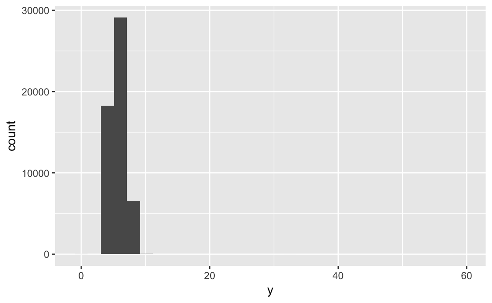
ggplot(diamonds, aes(z)) + geom_histogram() #> `stat_bin()` using `bins = 30`. Pick better value with `binwidth`.
Explore the distribution of
price. Do you discover anything unusual or surprising? (Hint: Carefully think about thebinwidthand make sure you try a wide range of values.)# default binwidth ggplot(diamonds, aes(price)) + geom_histogram() #> `stat_bin()` using `bins = 30`. Pick better value with `binwidth`.
# binwidth = 100 ggplot(diamonds, aes(price)) + geom_histogram(binwidth = 100) + scale_x_continuous(breaks = seq(0, 20000, by = 1000))
There are far fewer diamonds priced at $1500 compared to other price points. This is not apparent using the default number of bins.
How many diamonds are 0.99 carat? How many are 1 carat? What do you think is the cause of the difference?
ggplot(diamonds, aes(carat)) + geom_histogram(binwidth = .01) + coord_cartesian(xlim = c(.97, 1.03))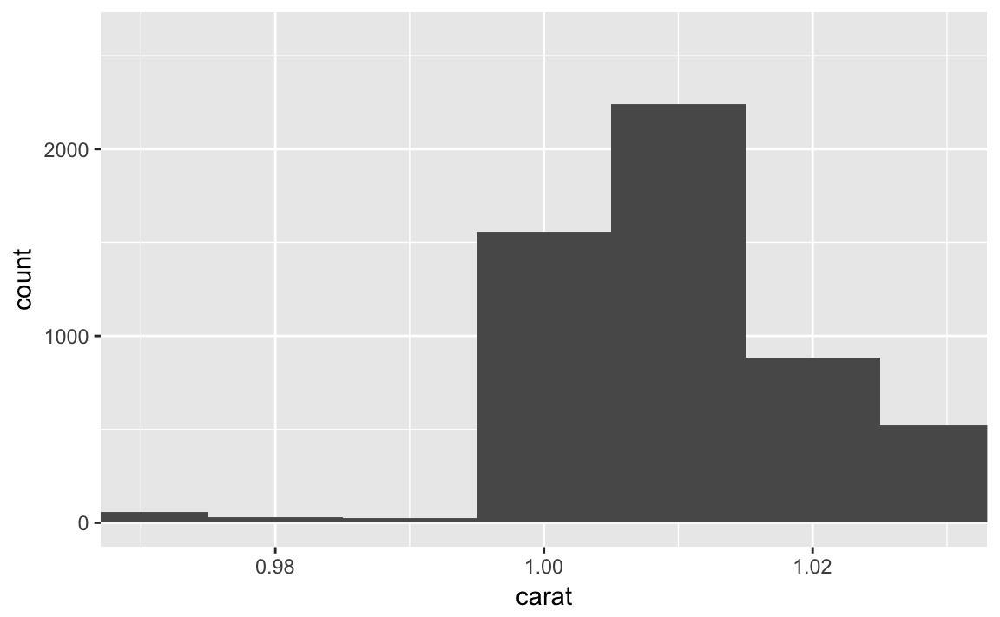
Around 1500 diamonds are \(1.00\) carat, compared to around 30 or so diamonds at \(.99\) carat. This could occur because prospective buyers of diamonds, if they are already willing to buy a \(.99\) carat diamond will decide it is more aesthetically pleasing to say they bought a \(1\) carat diamond so there is less demand for \(.99\) carat diamonds.
Compare and contrast
coord_cartesian()vsxlim()orylim()when zooming in on a histogram. What happens if you leavebinwidthunset? What happens if you try and zoom so only half a bar shows?# full plot ggplot(diamonds, aes(carat, price)) + geom_point() + geom_smooth() #> `geom_smooth()` using method = 'gam'
# xlim ggplot(diamonds, aes(carat, price)) + geom_point() + geom_smooth() + xlim(1, 3) #> `geom_smooth()` using method = 'gam' #> Warning: Removed 34912 rows containing non-finite values (stat_smooth). #> Warning: Removed 34912 rows containing missing values (geom_point).
# coord_cartesian ggplot(diamonds, aes(carat, price)) + geom_point() + geom_smooth() + coord_cartesian(xlim = c(1, 3)) #> `geom_smooth()` using method = 'gam'
By using
xlim()orylim(), you remove all observations which exceed these values so they are not used to generate the plot. By usingcoord_cartesian(), those values are used to generate the plot and are merely cut off when zooming in. Note the change in the smoothing line in thexlim()example because it doesn’t have all the data points to calculate the line.
7.4.1 Exercises
What happens to missing values in a histogram? What happens to missing values in a bar chart? Why is there a difference?
ggplot(flights, aes(dep_delay)) + geom_histogram() #> `stat_bin()` using `bins = 30`. Pick better value with `binwidth`. #> Warning: Removed 8255 rows containing non-finite values (stat_bin).
# change AA to NA flights %>% mutate(carrier = ifelse(carrier == "AA", NA, carrier)) %>% ggplot(aes(carrier)) + geom_bar()
Histograms omit missing values, whereas bar charts draw them as a separate category. For continuous variables, like in a histogram, there is no meaningful location to draw missing values. On the far left? Far right? Middle? But for bar charts, which are used for categorical variables, you could draw them as a distinct bar; by default it can be located anywhere on the chart (conventionally it is drawn on the right side). You can override this default to completely remove missing values from the chart if you prefer.
What does
na.rm = TRUEdo inmean()andsum()?It strips missing values before computing the statistic.
7.5.1.1 Exercises
Use what you’ve learned to improve the visualisation of the departure times of cancelled vs. non-cancelled flights.
# original chart flights %>% mutate( cancelled = is.na(dep_time), sched_hour = sched_dep_time %/% 100, sched_min = sched_dep_time %% 100, sched_dep_time = sched_hour + sched_min / 60 ) %>% ggplot(mapping = aes(sched_dep_time)) + geom_freqpoly(mapping = aes(colour = cancelled), binwidth = 1/4)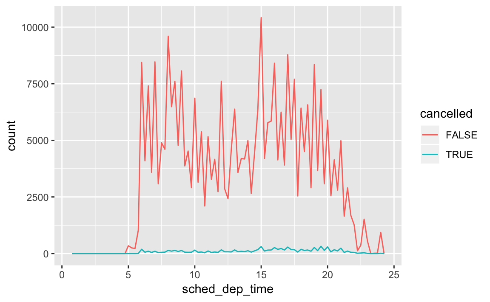
# revised chart flights %>% mutate( cancelled = is.na(dep_time), sched_hour = sched_dep_time %/% 100, sched_min = sched_dep_time %% 100, sched_dep_time = sched_hour + sched_min / 60 ) %>% ggplot(aes(x = sched_dep_time, y = ..density.., color = cancelled)) + geom_freqpoly(binwidth = 1/4)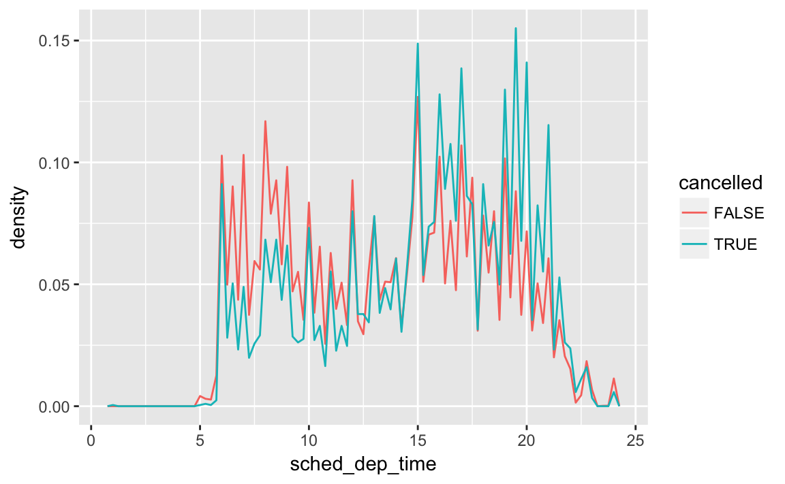
What variable in the diamonds dataset is most important for predicting the price of a diamond? How is that variable correlated with cut? Why does the combination of those two relationships lead to lower quality diamonds being more expensive?
ggplot(diamonds, aes(carat, price)) + geom_point() + geom_smooth() #> `geom_smooth()` using method = 'gam'
Carat size is the most important predictor of price.
ggplot(diamonds, aes(cut, carat)) + geom_boxplot()
This boxplot visualizes the relationship between cut and carat. On average, fair and good cut diamonds are larger than premium and ideal cuts. If carat size is the more dominant predictor of price, then some larger good cut diamonds will be more expensive than smaller ideal cut diamonds.
Install the
ggstancepackage, and create a horizontal boxplot. How does this compare to usingcoord_flip()?install.packages("ggstance")To create a horizontal layer in
ggplot2withcoord_flip(), you have to supply aesthetics as if they were to be drawn vertically:ggplot(diamonds, aes(cut, carat)) + geom_boxplot() + coord_flip()
In
ggstance, you supply aesthetics in their natural order:library(ggstance) #> #> Attaching package: 'ggstance' #> The following objects are masked from 'package:ggplot2': #> #> geom_errorbarh, GeomErrorbarh ggplot(diamonds, aes(carat, cut)) + geom_boxploth()
One problem with boxplots is that they were developed in an era of much smaller datasets and tend to display a prohibitively large number of “outlying values”. One approach to remedy this problem is the letter value plot. Install the
lvplotpackage, and try usinggeom_lv()to display the distribution of price vs cut. What do you learn? How do you interpret the plots?devtools::install_github("hadley/lvplot")library(lvplot) # with boxplot ggplot(diamonds, aes(cut, price)) + geom_boxplot()
# with lvplot ggplot(diamonds, aes(cut, price)) + geom_lv()
Compare and contrast
geom_violin()with a facettedgeom_histogram(), or a colouredgeom_freqpoly(). What are the pros and cons of each method?# geom_violin ggplot(diamonds, aes(cut, price)) + geom_violin()
# faceted geom_histogram ggplot(diamonds, aes(price)) + geom_histogram() + facet_grid(. ~ cut) #> `stat_bin()` using `bins = 30`. Pick better value with `binwidth`.
# colored geom_freqpoly ggplot(diamonds, aes(price, color = cut)) + geom_freqpoly() #> `stat_bin()` using `bins = 30`. Pick better value with `binwidth`.
If you have a small dataset, it’s sometimes useful to use
geom_jitter()to see the relationship between a continuous and categorical variable. Theggbeeswarmpackage provides a number of methods similar togeom_jitter(). List them and briefly describe what each one does.
10 Tibbles
10.5 Exercises
How can you tell if an object is a tibble? (Hint: try printing
mtcars, which is a regular data frame).# data frame print(mtcars) #> mpg cyl disp hp drat wt qsec vs am gear carb #> Mazda RX4 21.0 6 160.0 110 3.90 2.62 16.5 0 1 4 4 #> Mazda RX4 Wag 21.0 6 160.0 110 3.90 2.88 17.0 0 1 4 4 #> Datsun 710 22.8 4 108.0 93 3.85 2.32 18.6 1 1 4 1 #> Hornet 4 Drive 21.4 6 258.0 110 3.08 3.21 19.4 1 0 3 1 #> Hornet Sportabout 18.7 8 360.0 175 3.15 3.44 17.0 0 0 3 2 #> Valiant 18.1 6 225.0 105 2.76 3.46 20.2 1 0 3 1 #> Duster 360 14.3 8 360.0 245 3.21 3.57 15.8 0 0 3 4 #> Merc 240D 24.4 4 146.7 62 3.69 3.19 20.0 1 0 4 2 #> Merc 230 22.8 4 140.8 95 3.92 3.15 22.9 1 0 4 2 #> Merc 280 19.2 6 167.6 123 3.92 3.44 18.3 1 0 4 4 #> Merc 280C 17.8 6 167.6 123 3.92 3.44 18.9 1 0 4 4 #> Merc 450SE 16.4 8 275.8 180 3.07 4.07 17.4 0 0 3 3 #> Merc 450SL 17.3 8 275.8 180 3.07 3.73 17.6 0 0 3 3 #> Merc 450SLC 15.2 8 275.8 180 3.07 3.78 18.0 0 0 3 3 #> Cadillac Fleetwood 10.4 8 472.0 205 2.93 5.25 18.0 0 0 3 4 #> Lincoln Continental 10.4 8 460.0 215 3.00 5.42 17.8 0 0 3 4 #> Chrysler Imperial 14.7 8 440.0 230 3.23 5.34 17.4 0 0 3 4 #> Fiat 128 32.4 4 78.7 66 4.08 2.20 19.5 1 1 4 1 #> Honda Civic 30.4 4 75.7 52 4.93 1.61 18.5 1 1 4 2 #> Toyota Corolla 33.9 4 71.1 65 4.22 1.83 19.9 1 1 4 1 #> Toyota Corona 21.5 4 120.1 97 3.70 2.46 20.0 1 0 3 1 #> Dodge Challenger 15.5 8 318.0 150 2.76 3.52 16.9 0 0 3 2 #> AMC Javelin 15.2 8 304.0 150 3.15 3.44 17.3 0 0 3 2 #> Camaro Z28 13.3 8 350.0 245 3.73 3.84 15.4 0 0 3 4 #> Pontiac Firebird 19.2 8 400.0 175 3.08 3.85 17.1 0 0 3 2 #> Fiat X1-9 27.3 4 79.0 66 4.08 1.94 18.9 1 1 4 1 #> Porsche 914-2 26.0 4 120.3 91 4.43 2.14 16.7 0 1 5 2 #> Lotus Europa 30.4 4 95.1 113 3.77 1.51 16.9 1 1 5 2 #> Ford Pantera L 15.8 8 351.0 264 4.22 3.17 14.5 0 1 5 4 #> Ferrari Dino 19.7 6 145.0 175 3.62 2.77 15.5 0 1 5 6 #> Maserati Bora 15.0 8 301.0 335 3.54 3.57 14.6 0 1 5 8 #> Volvo 142E 21.4 4 121.0 109 4.11 2.78 18.6 1 1 4 2 # tibble print(as_tibble(mtcars)) #> # A tibble: 32 × 11 #> mpg cyl disp hp drat wt qsec vs am gear carb #> * <dbl> <dbl> <dbl> <dbl> <dbl> <dbl> <dbl> <dbl> <dbl> <dbl> <dbl> #> 1 21.0 6 160 110 3.90 2.62 16.5 0 1 4 4 #> 2 21.0 6 160 110 3.90 2.88 17.0 0 1 4 4 #> 3 22.8 4 108 93 3.85 2.32 18.6 1 1 4 1 #> 4 21.4 6 258 110 3.08 3.21 19.4 1 0 3 1 #> 5 18.7 8 360 175 3.15 3.44 17.0 0 0 3 2 #> 6 18.1 6 225 105 2.76 3.46 20.2 1 0 3 1 #> 7 14.3 8 360 245 3.21 3.57 15.8 0 0 3 4 #> 8 24.4 4 147 62 3.69 3.19 20.0 1 0 4 2 #> 9 22.8 4 141 95 3.92 3.15 22.9 1 0 4 2 #> 10 19.2 6 168 123 3.92 3.44 18.3 1 0 4 4 #> # ... with 22 more rowsA data frame will print the entire contents. A tibble will only print (by default) the first 10 rows and as many columns as will fit in the console.
Compare and contrast the following operations on a
data.frameand equivalent tibble. What is different? Why might the default data frame behaviours cause you frustration?# on a data frame df <- data.frame(abc = 1, xyz = "a") df$x #> [1] a #> Levels: a df[, "xyz"] #> [1] a #> Levels: a df[, c("abc", "xyz")] #> abc xyz #> 1 1 a # on a tibble df <- tibble(abc = 1, xyz = "a") df$x #> Warning: Unknown column 'x' #> NULL df[, "xyz"] #> # A tibble: 1 × 1 #> xyz #> <chr> #> 1 a df[, c("abc", "xyz")] #> # A tibble: 1 × 2 #> abc xyz #> <dbl> <chr> #> 1 1 a- Tibbles never do partial matching; data frames do.
Subsetting tibbles using
[[will always return a tibble; subsetting data frames using[[can potentially return a vector.
If you have the name of a variable stored in an object, e.g.
var <- "mpg", how can you extract the reference variable from a tibble?var <- "hwy" mpg[[var]] #> [1] 29 29 31 30 26 26 27 26 25 28 27 25 25 25 25 24 25 23 20 15 20 17 17 #> [24] 26 23 26 25 24 19 14 15 17 27 30 26 29 26 24 24 22 22 24 24 17 22 21 #> [47] 23 23 19 18 17 17 19 19 12 17 15 17 17 12 17 16 18 15 16 12 17 17 16 #> [70] 12 15 16 17 15 17 17 18 17 19 17 19 19 17 17 17 16 16 17 15 17 26 25 #> [93] 26 24 21 22 23 22 20 33 32 32 29 32 34 36 36 29 26 27 30 31 26 26 28 #> [116] 26 29 28 27 24 24 24 22 19 20 17 12 19 18 14 15 18 18 15 17 16 18 17 #> [139] 19 19 17 29 27 31 32 27 26 26 25 25 17 17 20 18 26 26 27 28 25 25 24 #> [162] 27 25 26 23 26 26 26 26 25 27 25 27 20 20 19 17 20 17 29 27 31 31 26 #> [185] 26 28 27 29 31 31 26 26 27 30 33 35 37 35 15 18 20 20 22 17 19 18 20 #> [208] 29 26 29 29 24 44 29 26 29 29 29 29 23 24 44 41 29 26 28 29 29 29 28 #> [231] 29 26 26 26Practice referring to non-syntactic names in the following data frame by:
annoying <- tibble( `1` = 1:10, `2` = `1` * 2 + rnorm(length(`1`)) )Extracting the variable called
1.annoying$`1` #> [1] 1 2 3 4 5 6 7 8 9 10Plotting a scatterplot of
1vs2.ggplot(annoying, aes(`1`, `2`)) + geom_point()
Creating a new column called
3which is2divided by1.(annoying <- mutate(annoying, `3` = `2` / `1`)) #> # A tibble: 10 × 3 #> `1` `2` `3` #> <int> <dbl> <dbl> #> 1 1 3.18 3.18 #> 2 2 4.64 2.32 #> 3 3 5.37 1.79 #> 4 4 7.19 1.80 #> 5 5 9.14 1.83 #> 6 6 9.83 1.64 #> 7 7 12.62 1.80 #> 8 8 15.51 1.94 #> 9 9 17.42 1.94 #> 10 10 19.83 1.98Renaming the columns to
one,twoandthree.rename(annoying, one = `1`, two = `2`, three = `3`) #> # A tibble: 10 × 3 #> one two three #> <int> <dbl> <dbl> #> 1 1 3.18 3.18 #> 2 2 4.64 2.32 #> 3 3 5.37 1.79 #> 4 4 7.19 1.80 #> 5 5 9.14 1.83 #> 6 6 9.83 1.64 #> 7 7 12.62 1.80 #> 8 8 15.51 1.94 #> 9 9 17.42 1.94 #> 10 10 19.83 1.98
What does
tibble::enframe()do? When might you use it?enframe()is a helper function that converts named atomic vectors or lists to two-column data frames. You might use it if you have data stored in a named vector and you want to add it to a data frame and preserve both the name attribute and the actual value.enframe(c(a = 5, b = 7)) #> # A tibble: 2 × 2 #> name value #> <chr> <dbl> #> 1 a 5 #> 2 b 7What option controls how many additional column names are printed at the footer of a tibble?
getOption("tibble.max_extra_cols")
Session Info
devtools::session_info()
#> Session info --------------------------------------------------------------
#> setting value
#> version R version 3.3.2 (2016-10-31)
#> system x86_64, darwin13.4.0
#> ui RStudio (1.0.136)
#> language (EN)
#> collate en_US.UTF-8
#> tz America/Chicago
#> date 2017-02-27
#> Packages ------------------------------------------------------------------
#> package * version date source
#> assertthat 0.1 2013-12-06 CRAN (R 3.3.0)
#> backports 1.0.5 2017-01-18 CRAN (R 3.3.2)
#> base64enc 0.1-3 2015-07-28 CRAN (R 3.3.0)
#> broom * 0.4.2 2017-02-13 CRAN (R 3.3.2)
#> car 2.1-4 2016-12-02 CRAN (R 3.3.2)
#> caret * 6.0-73 2016-11-10 CRAN (R 3.3.2)
#> class 7.3-14 2015-08-30 CRAN (R 3.3.2)
#> codetools 0.2-15 2016-10-05 CRAN (R 3.3.2)
#> colorspace 1.3-2 2016-12-14 CRAN (R 3.3.2)
#> config 0.2 2016-08-02 CRAN (R 3.3.0)
#> DBI 0.5-1 2016-09-10 CRAN (R 3.3.0)
#> devtools 1.12.0 2016-06-24 CRAN (R 3.3.0)
#> digest 0.6.12 2017-01-27 CRAN (R 3.3.2)
#> dplyr * 0.5.0 2016-06-24 CRAN (R 3.3.0)
#> e1071 1.6-8 2017-02-02 CRAN (R 3.3.2)
#> evaluate 0.10 2016-10-11 CRAN (R 3.3.0)
#> forcats * 0.2.0 2017-01-23 CRAN (R 3.3.2)
#> foreach * 1.4.3 2015-10-13 CRAN (R 3.3.0)
#> foreign 0.8-67 2016-09-13 CRAN (R 3.3.2)
#> gam * 1.14 2016-09-10 CRAN (R 3.3.0)
#> gapminder * 0.2.0 2015-12-31 CRAN (R 3.3.0)
#> gbm * 2.1.1 2015-03-11 CRAN (R 3.3.0)
#> ggdendro * 0.1-20 2017-02-27 local
#> ggplot2 * 2.2.1 2016-12-30 CRAN (R 3.3.2)
#> gridExtra * 2.2.1 2016-02-29 cran (@2.2.1)
#> gtable 0.2.0 2016-02-26 CRAN (R 3.3.0)
#> haven * 1.0.0 2016-09-23 cran (@1.0.0)
#> highr 0.6 2016-05-09 CRAN (R 3.3.0)
#> hms 0.3 2016-11-22 CRAN (R 3.3.2)
#> htmltools 0.3.5 2016-03-21 CRAN (R 3.3.0)
#> httr 1.2.1 2016-07-03 CRAN (R 3.3.0)
#> ISLR * 1.0 2013-06-11 CRAN (R 3.3.0)
#> iterators 1.0.8 2015-10-13 CRAN (R 3.3.0)
#> jsonlite 1.2 2016-12-31 CRAN (R 3.3.2)
#> knitr * 1.15.1 2016-11-22 cran (@1.15.1)
#> labeling 0.3 2014-08-23 CRAN (R 3.3.0)
#> lattice * 0.20-34 2016-09-06 CRAN (R 3.3.2)
#> lazyeval 0.2.0 2016-06-12 CRAN (R 3.3.0)
#> lme4 1.1-12 2016-04-16 cran (@1.1-12)
#> lubridate 1.6.0 2016-09-13 CRAN (R 3.3.0)
#> magrittr 1.5 2014-11-22 CRAN (R 3.3.0)
#> MASS 7.3-45 2016-04-21 CRAN (R 3.3.2)
#> Matrix 1.2-8 2017-01-20 CRAN (R 3.3.2)
#> MatrixModels 0.4-1 2015-08-22 CRAN (R 3.3.0)
#> memoise 1.0.0 2016-01-29 CRAN (R 3.3.0)
#> mgcv 1.8-17 2017-02-08 CRAN (R 3.3.2)
#> minqa 1.2.4 2014-10-09 cran (@1.2.4)
#> mnormt 1.5-5 2016-10-15 CRAN (R 3.3.0)
#> ModelMetrics 1.1.0 2016-08-26 CRAN (R 3.3.0)
#> modelr * 0.1.0 2016-08-31 CRAN (R 3.3.0)
#> munsell 0.4.3 2016-02-13 CRAN (R 3.3.0)
#> nlme 3.1-131 2017-02-06 CRAN (R 3.3.2)
#> nloptr 1.0.4 2014-08-04 cran (@1.0.4)
#> nnet * 7.3-12 2016-02-02 CRAN (R 3.3.2)
#> nycflights13 0.2.2 2017-01-27 CRAN (R 3.3.2)
#> pbkrtest 0.4-6 2016-01-27 CRAN (R 3.3.0)
#> plyr 1.8.4 2016-06-08 CRAN (R 3.3.0)
#> pROC * 1.9.1 2017-02-05 CRAN (R 3.3.2)
#> psych 1.6.12 2017-01-08 CRAN (R 3.3.2)
#> purrr * 0.2.2 2016-06-18 CRAN (R 3.3.0)
#> quantreg 5.29 2016-09-04 CRAN (R 3.3.0)
#> R6 2.2.0 2016-10-05 CRAN (R 3.3.0)
#> randomForest * 4.6-12 2015-10-07 CRAN (R 3.3.0)
#> rappdirs 0.3.1 2016-03-28 CRAN (R 3.3.0)
#> rcfss * 0.1.3 2017-02-16 local
#> Rcpp 0.12.9 2017-01-14 CRAN (R 3.3.2)
#> readr * 1.0.0 2016-08-03 CRAN (R 3.3.0)
#> readxl 0.1.1 2016-03-28 CRAN (R 3.3.0)
#> reshape2 1.4.2 2016-10-22 CRAN (R 3.3.0)
#> rmarkdown 1.3 2016-12-21 CRAN (R 3.3.2)
#> rprojroot 1.2 2017-01-16 CRAN (R 3.3.2)
#> RSQLite * 1.1-2 2017-01-08 CRAN (R 3.3.2)
#> rstudioapi 0.6 2016-06-27 CRAN (R 3.3.0)
#> rvest 0.3.2 2016-06-17 CRAN (R 3.3.0)
#> scales 0.4.1 2016-11-09 CRAN (R 3.3.1)
#> sparklyr * 0.5.2 2017-02-16 CRAN (R 3.3.2)
#> SparseM 1.74 2016-11-10 CRAN (R 3.3.2)
#> stringi 1.1.2 2016-10-01 CRAN (R 3.3.0)
#> stringr * 1.1.0 2016-08-19 cran (@1.1.0)
#> survival * 2.40-1 2016-10-30 CRAN (R 3.3.0)
#> tibble * 1.2 2016-08-26 cran (@1.2)
#> tidyr * 0.6.1 2017-01-10 CRAN (R 3.3.2)
#> tidyverse * 1.1.1 2017-01-27 CRAN (R 3.3.2)
#> titanic * 0.1.0 2015-08-31 CRAN (R 3.3.0)
#> tree * 1.0-37 2016-01-21 CRAN (R 3.3.0)
#> withr 1.0.2 2016-06-20 CRAN (R 3.3.0)
#> xml2 1.1.1 2017-01-24 CRAN (R 3.3.2)
#> yaml 2.1.14 2016-11-12 cran (@2.1.14)This work is licensed under the CC BY-NC 4.0 Creative Commons License.